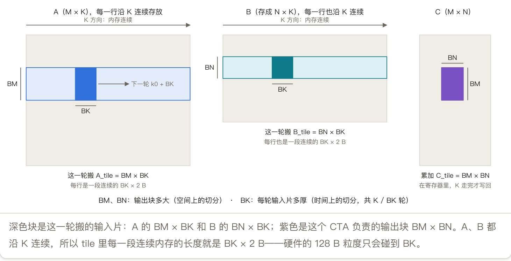
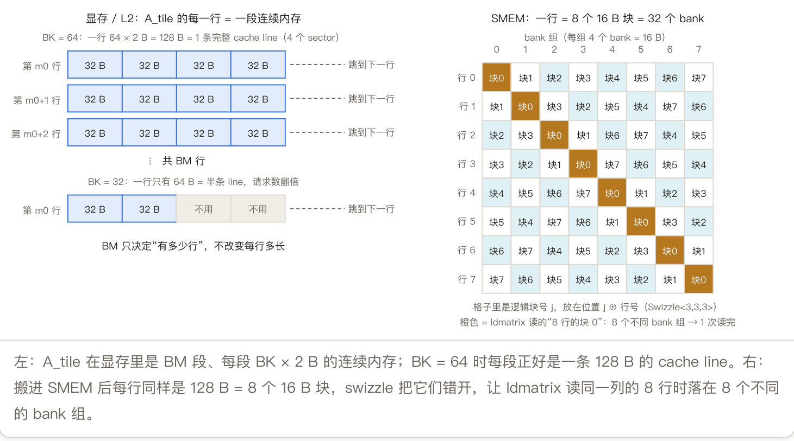
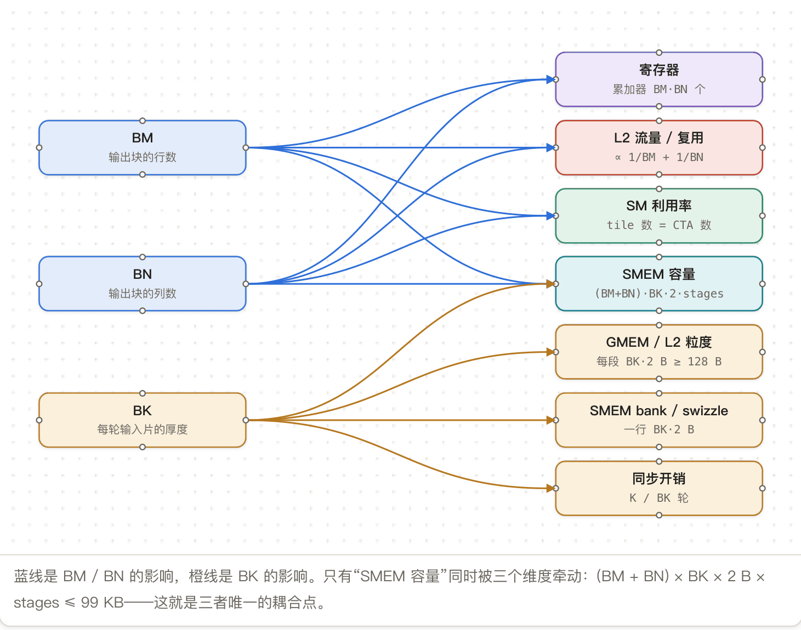

BM、BN、BK 各管什么：SMEM、GMEM、L2 的约束落在哪一维
CTA tile 有三个维度：BM、BN 决定这个 CTA 负责的输出块有多大，BK 决定每一轮沿 K 搬多厚的一片输入。这一页用三张图讲清楚：三个维度在矩阵上分别在哪里；为什么显存 cache line、L2和 SMEM bank 的 128 B 粒度只会碰到 BK；以及寄存器、L2 复用、SM 利用率、SMEM 容量、同步开销这些约束各自落在哪个维度上。最后用两组扫描表（固定 BM×BN 改 BK，固定 BK 改BM×BN）把影响量化，并解释在本套例子里为什么 BK 最先被定下来。
一句话
- BM × BN：这个 CTA 负责多大的一块输出。它决定累加器占多少寄存器、每个搬进来的字节被复用几次、一共有多少个 CTA。这些是性能上的主要取舍。
- BK：每一轮沿 K 搬多厚的一片输入。它决定连续内存的一段有多长、每级 stage 占多少 SMEM、K 循环走几轮。它不影响复用和总流量，但直接撞上硬件的 128 B 粒度。
先看它们在矩阵上的位置：

为什么 128 B 的约束只落在 BK 上
本套例子是 TN 布局：A 存成 M×K、B 存成 N×K，两者都沿 K 连续。所以 A_tile（BM × BK）在显存里不是一整块连续内存，而是 BM 段，每段 BK × 2 B 连续，段与段之间隔着整整一行（K = 1024 时是 2048 B）。B_tile 同理，是 BN 段。
这样一来：
- 每段多长 = BK × 2 B。cache line 是否完整、SMEM 的一行多宽、能不能用 128 B swizzle，全看这个长度。
- 有多少段 = BM（或 BN）。段数多少和 128 B 无关，只影响总共搬多少字节。
三把硬件“尺子”都和 128 B 有关（cache line、sector、bank 的含义见 硬件心智模型 的“cache line、sector、bank”一节）：
| 尺子 | 数字 | 出处 | 含义 |
|---|---|---|---|
| SMEM 的一排 bank | 32 个 bank × 4 B = 128 B | 每个时钟每个 bank 能给出一个 4 B 的字 | 地址 0–127 B 落在 bank 0–31，128–255 B 又从 bank 0 开始；128 B 是一个时钟能无冲突服务的最大跨度（一个 wavefront） |
| 一次搬运的单位 | 16 B = 8 个 BF16 | cp.async 每线程最宽 16 B；ldmatrix 每个 lane 的行地址也指向 16 B |
16 B 占 4 个 bank，叫一个 bank 组；128 B ÷16 B = 8 个 bank 组 |
| 显存的一条 cache line | 128 B = 4 个 32 B sector | L2 的登记和搬运粒度 | 一次读满一整条最划算 |
BF16 每元素 2 B，128 B ÷ 2 B = 64 个元素——BK = 64 的下限就来自这个除法。

图 2 里哪些是硬件定死的，哪些是我们自己选的
图 2 把硬件规则和我们的选择画在了一起。拆开看：
| 图里的东西 | 硬件定死的？ | 说明 |
|---|---|---|
| cache line 128 B、sector 32 B，按地址对齐切分 | 是 | L2 的工作方式：地址 0–127 是一条 line，128–255 是下一条，与程序无关 |
| A 按 K 连续存储、行跨度 2048 B | 否，存储格式是我们选的 | 换成按 M 连续，“每段”就变成沿 M 的一段 |
| 每段长度 = BK × 2 B | 否，BK 是我们选的 | 选 BK = 64，一段正好对上一条 line |
| SMEM 有 32 个 bank × 4 B，bank 号 = (字节地址 ÷ 4) mod 32 | 是 | SMEM 的物理结构 |
| “SMEM 的一行 = 128 B” | 否，这是我们看它的方式 | SMEM 只是一段线性地址。每连续 128 B 正好把 32 个 bank 走一遍，所以按 128 B 一行画出来最直观 |
ldmatrix 每次读 8 个地址、每个地址取连续 16 B |
是 | PTX 指令的定义：一个 8×8 的 BF16 小矩阵 = 8 行 × 16 B |
ldmatrix 读的是“8 个不同的 M 行、同一个 K 位置” |
半是 | mma 的 A fragment 规定了要 8 个 M 行；因为 A 在 SMEM 里也按 K 连续存，这 8 行就隔着一整行的距离 |
| tile 的元素放在 SMEM 的哪个地址（不 swizzle、padding 还是 swizzle） | 否，完全是我们选的 | swizzle 就是我们自己定的一个地址映射；硬件只看到最终地址。TMA 的 SWIZZLE_128B 是硬件能帮你做这种映射，但用不用、用哪种也是你选的 |
所以图 2 讲的是：在硬件规则（cache line、bank、ldmatrix 的读法）固定的前提下，我们怎样选 BK 和 SMEM 地址映射，才能让每次访问都不浪费。用具体地址走一遍 A_tile 在 SMEM 里按最简单的行主序摆放时，元素 (r, c) 的字节地址是 r × 128 + c × 2 （一行 64 个 BF16 = 128 B）。ldmatrix 读第 0 个 8×8 小矩阵，要第 0–7 行、每行第 0–7 列（也就是每行的前 16 B）： |
||
| 行 r | 不 swizzle：地址 | 起始 bank |
| 0 | 0 | 0 |
| 1 | 128 | 0 |
| 2 | 256 | 0 |
| 3 | 384 | 0 |
| 4 | 512 | 0 |
| 5 | 640 | 0 |
| 6 | 768 | 0 |
| 7 | 896 | 0 |
- 不 swizzle：8 个地址相差 128 B 的整数倍，而 128 B 正好是 32 个 bank 的一整圈，所以 8 行都落在 bank 0–3 上。bank 0–3 一个时钟只能各给一个 4 B 字，这 8 行就要分 8 次读，这就是 8 路 bank conflict。
- swizzle 后：第 r 行的第 j 个 16 B 块放到位置 j ⊕ r，地址变成
r × 128 + (j ⊕ r) × 16。第 0 块的 8 行依次落在 bank 组 0、1、…、7，正好铺满 32 个 bank，1 次读完。
swizzle 没有改变“哪个元素属于哪一行”，只改了它在 SMEM 里的地址。读的时候 ldmatrix 用同一套映射算出地址，取回来的还是原来那个元素。
一句话：cache line、bank 数量和 ldmatrix 的读法是硬件定的；BK、存储格式和 SMEM 地址映射是我们选的。图 2 里 128 B 到处出现，就是为了让我们的选择对齐硬件的粒度。
两边的 128 B 都来自同一个根：一个 warp 是 32 个线程，每人 4 B，共 128 B。SMEM 因此做成 32 个 bank × 4 B，L2 的 cache line 也做成 128 B。BF16 每元素 2 B，凑满 128 B 要 64 个元素——这就是 BK = 64 的下限。
如果 A 改成按 M 连续（列主序），A_tile 就变成 BK 段、每段 BM × 2 B，这时 128 B 的约束会落到 BM 上，copy 的线程布局也要沿 M 排，读 SMEM 时要用 ldmatrix.trans 。所以准确的说法是：硬件粒度约束 tile 的连续维；在 TN 布局下 A 和 B 的连续维都是 K，于是两边的约束都落在 BK 上。
约束地图：每种硬件资源卡的是哪一维

逐条说明（数字以 128×128×64 为基准）：
| 约束 | 公式 | 卡哪一维 | 128×128×64 的值 | 怎么理解 |
|---|---|---|---|---|
| 寄存器 | 累加器 = BM·BN 个 FP32 | BM、BN | 16384 个 = 8 warp 每线程 64 个 | 输出块越大，寄存器越紧；与 BK 无关（累加器只看输出） |
| L2 流量 /复用 | 总流量 = 2 B · M·N·K ·(1/BM + 1/BN) | BM、BN | 每字节复用 BM·BN/(BM+BN) = 64 次 | 同一块 A 被 N/BN 个 CTA 重复读、B 被 M/BM 个 CTA 重复读；BK 被约掉了 |
| SM 利用率 | CTA 数 = ⌈M/BM⌉·⌈N/BN⌉ |
BM、BN | 8192³ 时 4096 个；1024×256 时只有 16 个 | 输出块越大，CTA 越少，小问题会用不满 170 个 SM |
| SMEM 容量 | (BM+BN)·BK·2 B·stages≤ 99 KB | 三者都有 | 32 KB / 级，放 3 级 | 唯一的耦合点：BM+BN 大了，BK 或 stage 数就得小 |
| GMEM /L2 粒度 | 每段 BK·2 B，最好 ≥ 128 B 且 128 B 对齐 | BK | 128 B = 1 条整 line | 段短于 128 B 时每条 line 只用一部分，请求数变多 |
| SMEM bank /swizzle | 一行 BK·2 B；128 B 才能用 Swizzle<3,3,3> /SWIZZLE_128B |
BK | 128 B，8 个 16 B 块 | 一行 64 B 只能用 64 B swizzle（也无冲突，但 TMA 和 cache line 都不满） |
| 同步开销 | K 循环 K/BK 轮，每轮一次 wait + barrier | BK | K = 1024 时 16 轮，每轮 4 个 k16 步 | BK 越小，固定开销付的次数越多 |
关键的一行是 L2 流量里 BK 被约掉：每走一步 K 的强度 = 2·BM·BN·BK FLOP / ((BM + BN)·BK·2 B) = BM·BN / (BM + BN) ← 没有 BK 总 L2→SM 流量 = Σ_CTA (BM + BN)·K·2 B = 2 B · M·N·K · (1/BM + 1/BN) ← 没有 BK BK 只是把同样多的字节分成几批搬：批大一点、次数少一点，总量一样。所以 BK 不参与“复用 vs 寄存器 vs SM 数”的主要取舍，它可以先按硬件粒度定死，再去调 BM × BN。 |
扫描一：固定 BM × BN = 128×128，只改 BK
| BK | 每段（一行）长度 | 占一条 cache line | SMEM swizzle | 每级 stage | 99 KB 最多几级 | K = 1024 的轮数 | 每轮计算 | 每轮 k16 步 |
|---|---|---|---|---|---|---|---|---|
| 16 | 32 B | 1/4（1 个 sector） | 32 B | 8 KB | 12 | 64 | 1024 clk | 1 |
| 32 | 64 B | 1/2（2 个 sector） | 64 B | 16 KB | 6 | 32 | 2048 clk | 2 |
| 64 | 128 B | 1 条（4 个 sector） | 128 B | 32 KB | 3 | 16 | 4096 clk | 4 |
| 128 | 256 B | 2 条 | 128 B × 2 个 atom | 64 KB | 1 | 8 | 8192 clk | 8 |
不管 BK 取多少，这几项都不变：累加器 16384 个，每字节复用 64 次，L2→SM 总流量相同，CTA 数相同。
读法：
- 往小走（16、32）：stage 能放很多级，但每段连续内存短于一条 cache line，用不上 128 B swizzle 和整行的 TMA box；轮数翻倍，同步开销翻倍。
- 往大走（128）：粒度没问题（两条整 line），但每级 64 KB，99 KB 只放得下 1 级，流水线没了，访存延迟完全露出来。
- BK = 64 是“粒度刚好满足”和“还能放 3 级”的交点。表格下面那句说明：改 BK 时复用、总流量、CTA 数、寄存器全都不变——这正是 BK 能单独先定的原因。
扫描二：固定 BK = 64，只改 BM × BN
| BM × BN | 累加器（每线程，4 / 8 warp） | 每级 stage | 最多几级 | 每字节复用 | 1024×256×1024 的 CTA 数· L2→SM 流量 | 8192³ 的 CTA 数 |
|---|---|---|---|---|---|---|
| 64×32 | 16 / — | 12 KB | 8 | 21 | 128 · 24 MB | 32768 |
| 64×64 | 32 / 16 | 16 KB | 6 | 32 | 64 · 16 MB | 16384 |
| 128×64 | 64 / 32 | 24 KB | 4 | 43 | 32 · 12 MB | 8192 |
| 128×128 | 128 / 64 | 32 KB | 3 | 64 | 16 · 8 MB | 4096 |
| 128×256 | — / 128 | 48 KB | 2 | 85 | 8 · 6 MB | 2048 |
读法：改 BM × BN 时，寄存器、复用、CTA 数、L2 流量、stage 数全都跟着变，而且方向互相冲突：
- 变大：复用更高、L2 流量更少，但寄存器更紧、stage 更少、CTA 更少。
- 变小：CTA 更多（小问题能用满 SM），但每个字节复用更少，L2 流量更大。
这就是为什么真正的取舍在 BM × BN 上：大问题（8192³）选 128×128，小问题（端到端例子的 1024×256）选 64×32 或配合 split-K / Stream-K（见 配置决策）。
为什么这两个约束就能把 BK 定在 64：一条代价曲线
“一行至少 128 B”和“至少放得下 2–3 级 stage”本身只是两条边界。真正要比的是：一个 tile 走完整个 K 要多久。
一个 tile 的主循环时间 = 轮数 × 每轮实际时间 轮数 = K / BK
每轮实际时间 ≈ max(每轮计算, 访存延迟 / 提前的级数) + 每轮固定开销
- 每轮计算 = 2 × BM × BN × BK ÷ 512 clk，和 BK 成正比。
- 每轮固定开销：等数据到齐（wait）、
__syncthreads()或 mbarrier、发下一级的加载、更新 stage 指针。这部分和 BK 无关，每一轮都要付一次。 - 提前的级数 = stage 数 − 1。提前得够多，延迟就藏在计算后面；只有 1 级 stage 时根本没法提前，只能“搬完再算”。
于是 BK 上有两股方向相反的力：
- BK 越大越好：总计算量不变，但轮数变少，固定开销付的次数变少，占比 ∝ 1/BK。
- BK 大到 SMEM 放不下 2 级，就掉下悬崖：每级字节 = (BM + BN) × BK × 2 B。放不下 2 级时流水线断了，每一轮都要把访存延迟完整等一遍。
所以最优的 BK 是**“还能放下足够 stage 的最大 BK”**。128 B 的下限再补一刀：比它小，除了固定开销更多，每段连续内存还不满一条 cache line、用不上 128 B swizzle 和整行的 TMA box——往小走只有坏处。
用数字看这条曲线
假设访存延迟 1500 clk、每轮固定开销 150 clk（这两个是假设值，量级来自经验，实际以实测为准），128×128 tile、K = 1024、5090 的 99 KB SMEM：
| BK | 每级 stage | 能放几级 | 轮数 | 每轮计算 | 每轮实际 | 合计 | 比理想多出 |
|---|---|---|---|---|---|---|---|
| 16 | 8 KB | 8 | 64 | 1024 clk | 1174 clk | 75136 clk | 14.6% |
| 32 | 16 KB | 6 | 32 | 2048 clk | 2198 clk | 70336 clk | 7.3% |
| 64 | 32 KB | 3 | 16 | 4096 clk | 4246 clk | 67936 clk | 3.7% |
| 128 | 64 KB | 1 | 8 | 8192 clk | 9842 clk | 78736 clk | 20.1% |
（理想值 = 2 × 128 × 128 × 1024 ÷ 512 = 65536 clk。）
比理想多出的时间
BK = 16 ███████████████ 14.6% 轮数多，固定开销付 64 次
BK = 32 ███████ 7.3% 付 32 次
BK = 64 ████ 3.7% 付 16 次，还放得下 3 级 → 最低点
BK = 128 ████████████████████ 20.1% 只剩 1 级 stage，每轮都要等 1500 clk 的延迟
曲线从左往右一路下降（固定开销越摊越薄），到 BK = 128 时 SMEM 只放得下 1 级，突然跳上去。最低点就在悬崖前的最后一格：BK = 64。
两个反证：最优点会跟着悬崖移动
假如 SMEM 有 227 KB（H100 的容量），其他都不变：
| BK | 能放几级 | 比理想多出 |
|---|---|---|
| 64 | 7 | 3.7% |
| 128 | 3 | 1.8% |
悬崖往右移了，最优点也跟着变成 128。可见 64 不是什么魔法数字，而是5090 的 99 KB 在 128×128 tile 下划出的悬崖位置。
换成小 tile（端到端例子的 64×32）：每级只有 (64 + 32) × BK × 2 B，悬崖远得多：
| BK | 每级 stage | 能放几级 | 比理想多出 |
|---|---|---|---|
| 32 | 6 KB | 8 | 58.6% |
| 64 | 12 KB | 8 | 29.3% |
| 128 | 24 KB | 4 | 14.6% |
小 tile 每轮的计算量少，固定开销占比更大，所以更应该把 BK 往大取。按这个模型，端到端例子用 BK = 128 能比 BK = 64 再省约 11%；不过 BK = 128 时 TMA box 要拆成两个 128 B 的 box，实际收益要上机测。
小结
- 下限（一行 ≥ 128 B）：比它小只有坏处——粒度不满，固定开销还更多。
- 上限（放得下 ≥ 2–3 级 stage）：比它大就掉下悬崖——流水线断了，延迟露出来。
- 中间的趋势（BK 越大，固定开销越摊薄）：把最优点推到上限那一侧。
三者合起来，最优点就是满足 128 B 下限、又不掉下 SMEM 悬崖的最大 BK。对 BF16 + 128×128 + 99 KB 来说正好是 64。
这些数字可以用 python3 playground/sizing_5090.py 重新算，函数是 bk_sweep 。
那为什么说在这个例子里 BK 是“最先定、最硬”的
“最重要”要分两层说：
| BK | BM × BN | |
|---|---|---|
| 受硬件粒度直接约束 | 是：连续维的每段必须对上 128 B | 否 |
| 影响复用、L2 流量、CTA 数、寄存器 | 否（全部被约掉） | 是 |
| 在决策流程里 | 第一个定，几乎不用调 | 第二个定，是主要的调参对象 |
| 和别人的耦合 | 只通过 SMEM 容量和 BM + BN 耦合 | 和寄存器、SM 数、L2、SMEM 全部耦合 |
所以准确地说：BK 是被硬件“钉死”的那个维度——在 TN 布局、BF16 下，它几乎只能是 64（下限来自 128 B 粒度，上限来自 128×128 时放 3 级 stage）。正因为它被先钉死，而且改它不影响复用，后面的所有取舍才可以只在 BM × BN 和 stage 数上做。
换条件时 BK 怎么变
| 条件变化 | BK | 为什么 |
|---|---|---|
| FP8（1 B / 元素） | 128 | 凑满 128 B 要 128 个元素；每级字节数和 BF16 + BK = 64 一样 |
| 小 tile（64×32） | 64 或 128 | 每级只有 12 / 24 KB，上限放宽；BK = 128 同步次数减半，但 TMA box 要拆成两个 128 B 的 box |
| A 或 B 改成 M / N 连续 | BK 不再受 128 B 约束 | 约束转移到 BM 或 BN 上（见上面的提示） |
| 更大的 SMEM（H100，227 KB） | 仍常用 64 | 多出的 SMEM 一般用来放更大的 BM × BN 或更多 stage |